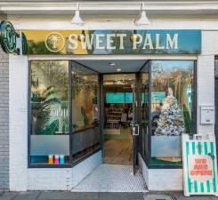

#1Local Pick
Sweet Palm Coffee & Food
CoffeeGrab & goWalkable
Sweet Palm is the easy-win brunch for the morning after a big night on Upper King. It's a coffee and food café right on King Street, so the group can roll out of a nearby Airbnb, grab coffee, breakfast, a wrap, or a dirty soda, and be fueled up without waiting on a two-hour reservation. It also works as your pre-activity stop before a boat cruise or a shopping walk down King.
Bachelorette tip: Use Sweet Palm on the morning you have an activity booked. Save the long sit-down brunch for the other day.
Visit Sweet Palm